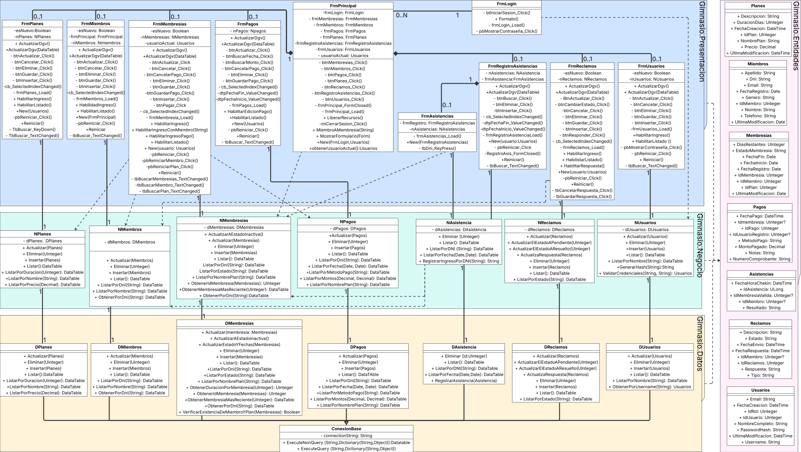

Arquitectura 4 capas
El sistema está diseñado siguiendo una arquitectura de 4 capas, lo cual es una práctica recomendada para mejorar la organización, mantenibilidad y escalabilidad del software. Las Namespaces que representan a las capas son:
Gimnasio.Presentacion(Capa de Presentación):- Responsable de la interfaz de usuario (UI) y la interacción con el usuario.
- En este sistema, está compuesta por formularios de Windows Forms (clases con prefijo
Frm), comoFrmLogin,FrmPrincipal,FrmMiembros,FrmPlanes, etc.
Gimnasio.Negocio(Capa de Lógica de Negocio):- Contiene las reglas de negocio, validaciones, cálculos y la lógica central de la aplicación. Actúa como intermediario entre la capa de Presentación y la capa de Acceso a Datos.
- Las clases en esta capa tienen el prefijo
N(por ejemplo,NUsuarios,NMiembros,NPlanes).
Gimnasio.Datos(Capa de Acceso a Datos):- Encargada de la comunicación directa con la base de datos. Realiza operaciones de Crear, Leer, Actualizar y Eliminar (CRUD) datos.
- Las clases aquí tienen el prefijo
D(por ejemplo,DUsuarios,DMiembros,DPlanes). Incluye una clase crucial llamadaConexionpara gestionar la conexión a la base de datos.
Gimnasio.Entidades(Capa de Entidades):- Define las clases que modelan los objetos del dominio del problema (por ejemplo,
Usuarios,Miembros,Planes,Membresias). Estas son clases que principalmente contienen propiedades para almacenar datos. - Esta capa es utilizada por todas las otras capas para transferir datos estructurados.
- Define las clases que modelan los objetos del dominio del problema (por ejemplo,
Flujo Típico de una Operación
- Un usuario interactúa con un formulario en la Capa de Presentación (ej.
FrmPlanes). - El formulario invoca un método en la clase correspondiente de la Capa de Negocio (ej.
NPlanes.Listar()). - La clase de Negocio aplica cualquier lógica o validación necesaria. Si necesita datos, invoca un método en la clase correspondiente de la Capa de Acceso a Datos (ej.
DPlanes.Listar()). En este proceso, puede usar o manipular objetos de la Capa de Entidades (ej.Planes). - La clase de Acceso a Datos, utilizando la funcionalidad heredada de
Conexion, ejecuta la consulta contra la base de datos. Puede recibir y devolver objetos de la Capa de Entidades oDataTable. - Los datos (o el resultado de la operación) regresan a través de la Capa de Negocio (que puede realizar transformaciones adicionales) y finalmente a la Capa de Presentación para ser mostrados al usuario. Esta arquitectura promueve una clara separación de responsabilidades, lo que facilita el desarrollo, las pruebas, el mantenimiento y la evolución del sistema de gimnasio.
Modelo de clases de la implementación del sistema
 Se identifican relaciones de:
Dependencia (línea punteada y flecha): Es una relación débil y temporal entre dos elementos, donde uno utiliza los servicios o la información del otro, pero no necesariamente al revés. Por ejemplo, en el evento
btnIniciarSesion_ClickdeFrmLogin, el formulario necesita validar el usuario y la contraseña. Para ello, crea una instancia de la claseNUsuariosdentro del alcance local debtnIniciarSesion_Click, dicha instancia solo existe durante la ejecución de ese método y así poder invocar el métodoValidarCredenciales(). Esta relación no implica queFrmLoginmantenga una referencia permanente aNUsuarios, sino que la utiliza de manera puntual y transitoria.Asociación (línea): es una relación más fuerte que la dependencia y representa que una clase mantiene una referencia a otra durante un período de tiempo determinado. Esto implica que una clase tiene un atributo cuyo tipo es otra clase, permitiendo la interacción directa y persistente entre ambas. Por ejemplo, en la clase
NPlanes, existe un atributo de tipoDPlanes, lo que significa queNPlanesestá asociada aDPlanesy puede utilizar sus métodos de consulta a la base de datos de manera continua a lo largo de la vida de la instancia deNPlanes.Herencia (línea con una flecha hueca): representa una relación jerárquica entre clases, donde una clase hija hereda atributos y métodos de una clase base. En este caso, las clases
DPlanes,DMiembros,DMembresias,DPagos,DAsistencia,DReclamos,DUsuariosheredan de la claseConexionBase. Gracias a esta, todas ellas pueden utilizar directamente los métodosExecuteQueryyExecuteNonQuerydefinidos enConexionBasepara realizar operaciones de acceso a datos, sin necesidad de re-implementarlos.